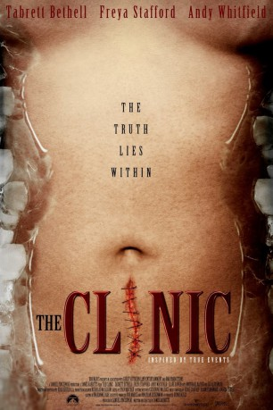

#9671 Saw Killing
Alternativ: The Clinic of Torture
 
 IMDB-Wertung: 5.4 / 10
IMDB-Wertung: 5.4 / 10  Metascore: 0
Metascore: 0 
Die schwangere Beth reist gemeinsam mit ihrem Verlobten Cameron durch das Land. Doch eines Nachts wacht sie in einer albtraumhaften Situation auf. Jemand greift das junge Paar an - und sie wissen nicht, warum sie attackiert werden. Doch dann wird sie gemeinsam mit anderen Müttern in einer Klinik gefangen gehalten, in der ihr noch ungeborenes Kind gestohlen wird. Irgendwer hat diese Frauen zusammengebracht und wird sie bald gegeneinander aufhetzen.
Jahr: 2010
Dauer: 93 Minuten
FSK: 16
Land: Australien Studio: Schröder MediaTonspuren: DTS - ,
Untertitel:
Auflösung: 1080p (1920x824) Größe: 4116 MB
Genre: Thriller, Horror, Krimi, Mystery
Regisseur: James Rabbitts
Drehbuch: James Rabbitts
Soundtrack: Jason Fernandez, Kirke Godfrey, Angela Little
Darsteller:
- Tabrett Bethell als Beth
- Freya Stafford als Veronica
- Andy Whitfield als Cameron
- Clare Bowen als Ivy
- Marshall Napier als Marvin
- Elizabeth Alexander als Ms Shepard
- Sophie Lowe als Allison
- Adrienne Pickering als Jane Doe
- Harold Hopkins als Grave Digger
- Anni Finsterer als Locker Room Woman
- Boris Brkic als Hank
- Marcel Bracks als Duncan
- Slava Orel als Russian Man
- Inga Romanostova als Russian Woman
- Bob Marcs als Police Officer #1
- Laurence Fleming als Beth's Father
- Kelsey Mckenzie als Paramedic
- Cecily Polson als Woman on Porch
- Chris Holloway als Police Officer #2
- Zac Wise als Beth as Baby - Dream
- Damenica Brain als Beth's Daughter - Newborn
- Mya Crampton als Beth's Daughter - Newborn
- Evie Isabella Green als Beth's Daughter - Graveyard
- Lexi Willow MacMaster als Beth's Daughter - Graveyard
- Tilly Rose Faure-Brac als Baby in Cage
- Ella Ruby Reeson als Baby in Cage
Datei: X:\2010(N-Z)\Saw Killing (2010, FSK16, 1920x824).mkv seit 02.10.2018
Festplatte: HD 2010(G-Z)-2011(A-F)
 Es gibt insgesamt 115 Filme in der Gruppe '2010(N-Z)'
Es gibt insgesamt 115 Filme in der Gruppe '2010(N-Z)'